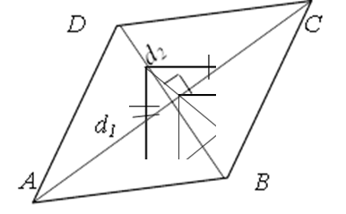
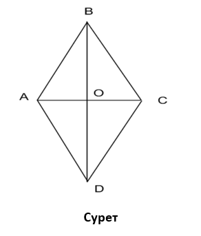

Ромб
Ромб деп барлық жақтары тең параллелограмм аталады.
Ромбтың қасиеттері:
- Параллелограммның барлық қасиеттері;
- Диагоналдары перпендикуляр;
- Диагональдар оның бұрыштарының биссектрисалары болып табылады.
Ромбтың белгілері.
Параллелограмм, егер оның шектес екі қабырғасы тең болса, оның диагоналдары перпендикуляр, ал диагональдардың бірі оның бұрышының биссектрисасы болып табылса, ромб болып табылады.
Теорема-3. Ромбтың ауданы оның диагоналдары көбейтіндісінің жартысына тең.
d2 және d2 – диагональдар,
S = 1⁄2d1d2
Дәлелдеу:
SABCD = SABD + SBCD = 1⁄2d1⁄2d2 + 1⁄2d1⁄2d2 = 1⁄4d1d2 + 1⁄4d1d2 = 2⁄4d1d2 = 1⁄2d1d2.
Теорема дәлелденді
Теорема-4. Ромб ауданын төмендегі формула арқылы анықтауға болады
r – ромбқа іштей сызылған шеңбердің радиусы
φ – кез келген бұрыш
Ромбтың ауданын іштей сызылған шеңбердің радиусы және кез келген бір бұрышы арқылы есептеу формуласы:
S =4r2 / sin(φ)
Дәлелдеу:
AD = a = 2r / sin(φ) , SABCD = a ∙ 2r = 4r² / sin(φ)
Теорема дәлелденді:
Мысалы: Ромбтың диагоналы-10 cм, ал қабырғасы -13 см . Ромбтың ауданын табыңыз (сурет )
Шешім: d1 және d1 – ромб диагональдары.Ромбтың ауданын оның диагональдары арқылы есептеу формуласы: S = 1⁄2d1d2 АС қабырғасы 10-ға тең болсын. Осыдан параллелограммның қасиеті бойынша ромб болып табылады, AO=10: 2=5. Себебі АС⊥BD болғандықтан және шарт бойынша АВ = 13см , осыдан Пифагор теоремасы бойынша АВО үшбұрышынан ВО=12см. Демек, BD=24см. Ромб ауданын диагональдарды қолдана отырып табамыз S = 1⁄2 10*27=120